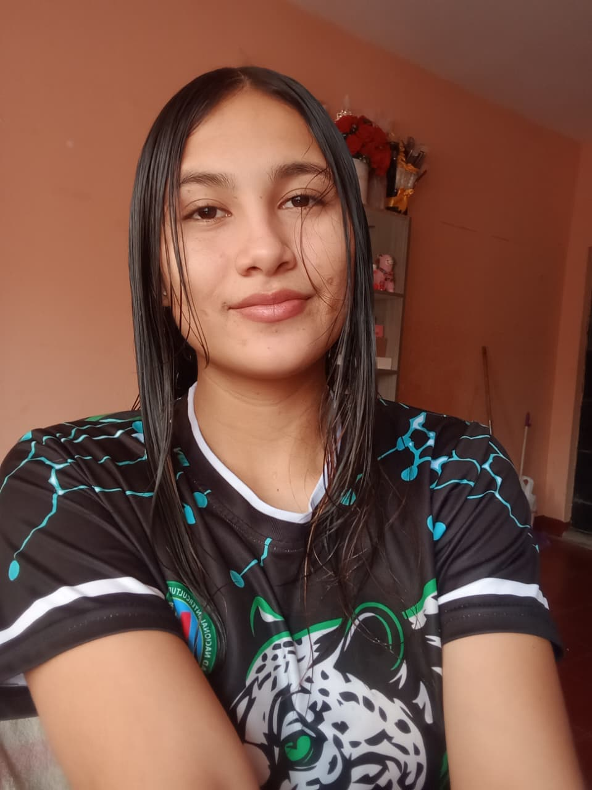
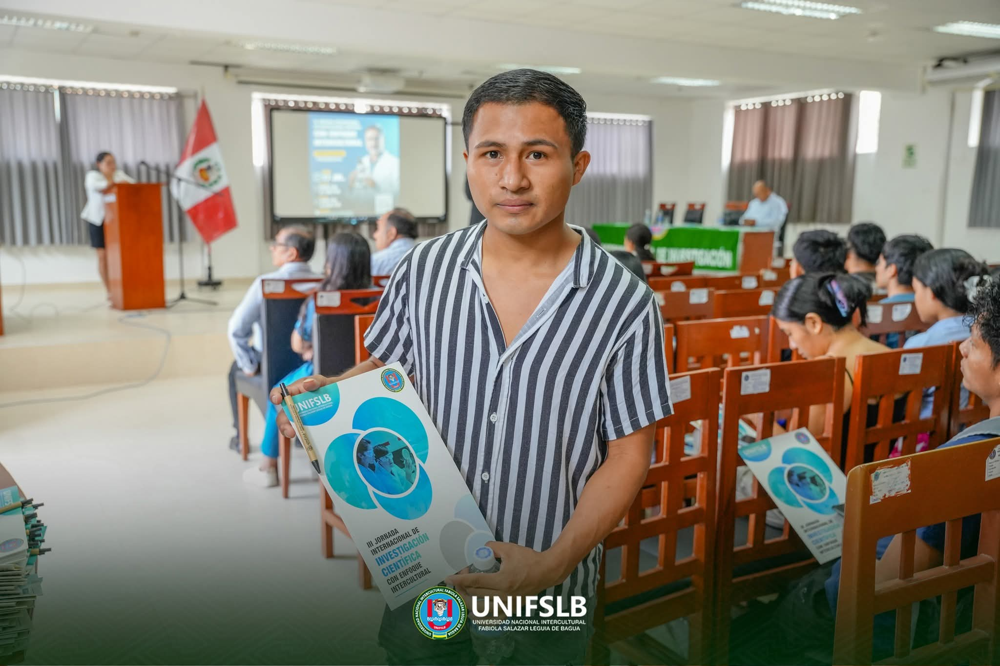

👨🎓 Equipo Expositor
Nuestros Estudiantes
Conoce al equipo que hace posible esta presentación vocacional.

🏹
Gildemeister Julca Ramos
Educación Tecnológica
VI Ciclo

Xiomara Guadalupe Mejia Uriol
Educación Tecnológica
V Ciclo
💻
Roberto Regulo Zuñiga Ayala
Educación Tecnológica
III Ciclo

🌎
Sugka Eleodan Ugkum Majuash
Educación Tecnológica
III Ciclo